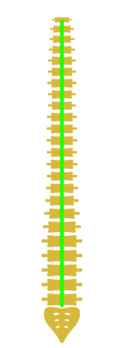
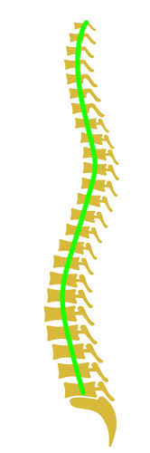

SOL - 11.2
SAĞ - 23.4
İliopsoas Kası
SAĞ TARAF KISA
SOL - 11.2
SAĞ - 23.4
Q Açısı
SOL - 11.2
Pelvis Seviyesi
SAĞ PELVİS DÜŞÜK
SOL - 11.2
Omuz Seviyesi
SAĞ OMUZ DÜŞÜK
SOL - 11.2
Gövde Anterior Fleksiyon
SOL - 11.2
Diz fleksiyon
SOL - 11.2
Baş - Boyun Anterior Fleksiyon
SOL - 11.2
Kalça Fleksiyon
SOL - 11.2
SAĞ - 23.4
Kalf Kası
SAĞ TARAF KISA
NEGATİF POZİTİF
|


Normal Omurga |
|---|
|
Ağırlık Merkezi 0,2mm önde, 1,2mm solda.
ARK İNDEKSİ %23.66 NORMAL TABAN ARK İNDEKSİ %23.66 NORMAL TABAN |
|---|
|
Ayak postürü incelemesinde; SOL ayağı PRONASYONDA(içe doğru dönme), SAĞ ayağı NORMAL bulunmuştur. Ayak postürünün bir parçası olan ayak iç arkı yüksekliği; SOL ve SAĞ ayak için NORMAL bulunmuştur. Gözü kapalı denge testinin kötü olması bozulan sol ayak postürü ile gelişen, bozulmuş duyu algısı ile açıklanabilir. Ayak postürü toplam skorları incelendiğinde ayak tabanlığı ortezine gerek duyulmamaktadır. Ayağınızda ağrılardan şikayetçiyseniz bizimle iletişime geçebilirsiniz. Kısalık testlerinde; Kalça fleksiyon (iliopsoas) kasında kısalık bulunmuştur. Bir ucu uyluğa diğer ucu ise omurgaya yapışan iliopsoas kasının kısalığı omurga biyomekaniğini bozarak bel çukurunu eğimini arttırabilir, ciddi bel ağrılarına yol açabilir. Bacak baldır (gastrocnemius) kasında kısalık bulunmuştur. Bir ucu uyluğa diğer ucu ise ayak bilenin arkasına yapışarak ayak tabanının yapısına katılan gastrocnemius kasının kısalığı ayak bileği esnekliğini bozarak sakatlanmalara yol açabilir. Kısalıklar için egzersiz uzmanlarınca hazırlanan egzersiz programı uygulanmalı ve egzersiz uzmanlarının gözetiminde yapılmalıdır. Skolyoz testinde; T3 omurga seviyesinde tepe noktası olan "6" eğimli skolyoz riski tespit edilmştir. Doktor konsültasyonu gerekmektedir. Doktor konsültasyonu için bizimle iletişime geçebilirsiniz. Postür Analizinde; SAĞ taraf OMUZ DÜŞÜKLÜĞÜ görülmüştür. ARTMIŞ LUMBAR LORDOZ görülmüştür. Bozuk postür ciddi bel, boyun ağrılarına, sakatlanma riskini artışına sebep olabilir. Kas dengesizlikleri, vücut algı bozuklukları gibi durumlar postürde görülen anormalliklere yol açabilir. |
|---|